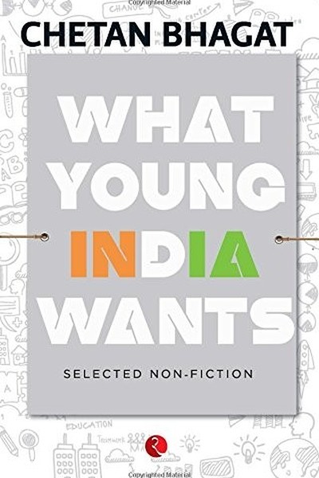

Library › Self-Improvement
What Young India Wants — Summary & Key Lessons

Stop blaming the system, start fixing yourself.
📖 OPEN THE FULL INTERACTIVE BREAKDOWN →🌐 Read it in Hindi, Hinglish, Gujarati, Tamil & 22 more languages — free, with audio.
💡 The Big Idea
Chetan Bhagat's essay collection — written during the anti-corruption movement — is a frank conversation with young India about the nation's biggest questions: education, corruption, careers, politics, love and success. Bhagat's message is deliberately unfashionable: stop blaming the system, start fixing yourself — 'if you want change, you have to be the change' isn't a slogan but a strategy. His essays argue that India's youth are its only real hope, and that hope begins with personal responsibility: study hard, work honestly, question authority, and build your life regardless of the circus around you.
🧠 The 6 Key Lessons
Lesson 1: The Change You Want: It Starts With Your Own Life
Part 1: The Nation
Bhagat's central provocation: every Indian complains about the system, and almost none change their own behaviour. He argues that national change is the aggregate of personal change — the honest professional, the non-bribing citizen, the diligent student. The lesson: 'the system' is not a building you can't enter; it's the sum of millions of personal choices, including yours. The person who waits for the system to fix itself is the system. Take the high road in your own transactions — your small honesty is a vote for the country you say you want.
📖 Example: Bhagat writes about the hypocrisy of Indians who condemn corruption while happily paying a bribe to skip a queue — the 'system' they hate is the one they feed. Personal integrity is the only reform that starts on schedule. Read the full example →
⚡ Do this: Find one place where your behaviour feeds the system you complain about. Change that one behaviour this week — no announcements, just do it.
Lesson 2: The Education Fix: Learn for Life, Not for Marks
Part 2: The Education
Bhagat's essays on Indian education are blunt: the system teaches memorization and rewards conformity, producing graduates who can answer exams but not solve problems. His fix is individual: treat education as skill-building, not certificate-collecting — learn to think, communicate, code, create. The lesson: your degree gets you the interview; your actual skills keep you employed. In a country of degree-holders, the differentiator is what you can DO. Supplement your education relentlessly — the self-taught edge is the only edge the system can't take from you.
📖 Example: Bhagat contrasts the topper who stops learning after college with the average student who keeps building skills — years later, the skill-builder has the career while the topper has the certificate. The market pays for capability, not credentials. Read the full example →
⚡ Do this: Identify one practical skill your education never gave you. Commit 30 minutes daily to building it — treat it as your real syllabus.
Lesson 3: The Career Question: Passion or Paycheck?
Part 3: The Careers
Bhagat addresses the Indian career dilemma honestly: parents push for 'safe' jobs, youth dream of passion, and both sides have a point. His answer: don't romanticize passion, don't demonize safety — instead, build a life where your work is at least 60% enjoyable, your skills compound, and your income grows. The lesson: the passion-vs-paycheck war is a false choice; the real question is whether your skills are growing. A 'safe' job that teaches you nothing is riskier than a 'risky' path that builds you. Optimize for growth, and both sides win.
📖 Example: Bhagat himself took a banking job, wrote at night, and only 'went passion' when the numbers worked — the famous example of 'do both until both becomes one'. The path was incremental, not dramatic. Read the full example →
⚡ Do this: Score your current work: enjoyment (1-10), skill growth (1-10), income trend (1-10). Pick the lowest score and make one change this quarter to raise it.
Lesson 4: The Corruption Question: Integrity Is a Career Asset
Part 4: The Politics
During the Anna Hazare movement, Bhagat argued that outrage must become action — and that the most powerful anti-corruption tool is personal integrity. His lesson: in a corrupt environment, honesty is not naivety but differentiation — the honest professional builds a reputation that compounds, while the corrupt one builds wealth that evaporates. The person who refuses the small bribe, the fake invoice, the inflated claim is building the only asset that can't be confiscated: trust. Integrity is not a moral luxury; it is the best long-term strategy available.
📖 Example: Bhagat points to professionals who rose faster by being the one person clients could trust absolutely — in a market where everyone cheats a little, the honest operator becomes the premium option. Read the full example →
⚡ Do this: Identify one 'small corruption' you tolerate in your work life. Eliminate it this month — and note what it does to your reputation within a year.
Lesson 5: The Love Question: Relationship Realism
Part 5: The Relationships
Bhagat's essays on love and marriage in India tackle the gap between Bollywood expectations and arranged-marriage reality: the lesson is communication and realism. His advice: choose partners based on shared values, not just chemistry; discuss money, family and ambition early; and treat marriage as a partnership to build, not a dream to expect. The lesson: every relationship is a long project with real maintenance — the couples who talk about the unromantic stuff survive; the ones who only chase the romance crash at the first real problem.
📖 Example: Bhagat's fictional and essayistic couples repeatedly fail because they assume love solves logistics — the bills, the in-laws, the career clashes. The couples who survive talk about the boring stuff early and often. Read the full example →
⚡ Do this: If you're in a relationship, schedule one 'boring' conversation this month — money, family, ambition, division of labour. The unromantic talk is the romantic investment.
Lesson 6: The Success Question: Define It Yourself
Part 6: The Meaning
Bhagat's closing essays challenge the Indian definition of success — the IIT/doctor/engineer template — arguing that a life measured only by others' metrics is a life half-lived. His lesson: success must be self-defined or it will be a moving goalpost owned by others. Write your own scorecard — health, relationships, purpose, craft — and check it honestly. The person who chases the template gets a life that looks right and feels empty; the person who defines success gets a life that can actually satisfy. The definition is the first success.
📖 Example: Bhagat's own career — banker turned writer, 'failed' by the template, fulfilled by his own — is the essay made flesh. The template would have given him a safer life and a smaller one. Read the full example →
⚡ Do this: Write your own success scorecard — 5 metrics that matter to YOU. Rate yourself today. The gaps are your real to-do list.
✅ 5-Step Action Plan
- Change one behaviour that feeds the system you complain about.
- Build one practical skill your education never gave you — 30 min daily.
- Score your work on enjoyment, growth, income — fix the lowest.
- Eliminate one 'small corruption' in your professional life.
- Write your own success scorecard and rate yourself honestly.
⚠️ When This Doesn't Work
Bhagat's 'young India wants solutions, not excuses' is the most popular Indian youth manifesto ever — and Dunzo is the warning that youth, energy and solutions aren't enough: the hyperlocal-delivery pioneer was the exact startup young India wanted — brilliant, convenient, full of promise — and it collapsed when the cash ran out, because the solution it offered cost more than anyone would pay. Bhagat's book is about the desire for change; the caveat is that desire doesn't pay for change. What young India wants is real; what young India can pay is the constraint. Build the solution — and price the problem honestly.
💀 The Graveyard Proves It
🛵 Dunzo — Everyone's Favorite App, Nobody's Profitable Delivery. Burn: $450M+ raised — app went dark. Read the full case study →
💬 Best Quotes from What Young India Wants
- “The system you hate is the one you feed — change your own transaction first.”
- “The market pays for capability, not credentials.”
- “Success must be self-defined, or it will be a moving goalpost owned by others.”
Interactive version: mark lessons as read, listen in your language, share quote cards.